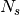
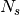

Description of the propagation environment¶
/usr/local/lib/python2.7/dist-packages/pkg_resources.py:991: UserWarning: /home/uguen/.python-eggs is writable by group/others and vulnerable to attack when used with get_resource_filename. Consider a more secure location (set with .set_extraction_path or the PYTHON_EGG_CACHE environment variable).
warnings.warn(msg, UserWarning)
from pylayers.gis.layout import *
from IPython.display import Image
import os
<matplotlib.figure.Figure at 0x4c8edd0>
Getting the list of all available Layouts : the ls() method¶
The ls() method lists the layout file which are available in the struc directory of the current project.
L=Layout()
L.ls()
['11D-E1.ini',
'DLR.ini',
'DLR2.ini',
'Lstruc.ini',
'TA-Office.ini',
'W2PTIN.ini',
'WHERE1.ini',
'creationPiece_09_SceneInitiale.ini',
'd24.ini',
'defstr.ini',
'defstr3.ini',
'example.ini',
'klepal.ini',
'mokadem.ini',
'newfm.ini',
'w2ptin.ini',
'where1.ini']
L.ls(typ='osm')
['DLR.osm', 'DLR2.osm', 'where1.osm']
L=Layout('DLR.osm')
L.Gs.node[1]
{'name': 'WALL',
'norm': array([-0.52106509, -0.85351694, 0. ]),
'transition': False,
'z': ('0.0', '3.0')}
L.saveosm('DLR.osm')
Image('../../../data/struc/images/TA-Office.png')

fig,ax=L.showGs()
L=Layout('TA-Office.ini')
L.showGs()
(<matplotlib.figure.Figure at 0x7f427466f550>,
<matplotlib.axes.AxesSubplot at 0x7f42746ab550>)
L=Layout('11D-E1.ini')
L
----------------
11D-E1.ini
----------------
Number of points : 204
Number of segments : 190
Number of sub segments : 0
Number of cycles : 0
Number of rooms : 0
degree 0 : []
degree 1 : [-214 -213 -212 -211 -210 -206 -204 -202 -201 -200 -198 -197 -196 -195 -194
-193 -191 -188 -184 -183 -182 -179 -178 -177 -175 -174 -172 -171 -167 -166
-164 -162 -161 -156 -154 -152 -150 -148 -147 -145 -144 -142 -140 -139 -137
-135 -134 -132 -130 -129 -128 -126 -124 -123 -122 -120 -118 -116 -115 -113
-112 -110 -109 -107 -105 -103 -102 -100 -98 -96 -94 -92 -90 -88 -87
-85 -80 -78 -75 -73 -71 -70 -68 -67 -65 -63 -62 -59 -57 -55
-54 -52 -51 -49 -48 -46 -43 -41 -40 -39 -37 -36 -33 -31 -30
-28 -25 -24 -21 -20 -18 -15 -13 -12 -10 -9 -8 -7 -6 -5
-4 -3]
degree 2 : 14
degree 3 : 42
degree 4 : [-190 -185 -181 -176 -170 -163 -149 -143 -138 -131 -127 -121 -114 -108 -101
-79 -72 -66 -53 -50 -38 -35 -22 -19 -14 -11]
xrange :(-2.536, 73.369)
yrange :(-0.096, 15.004)
Useful dictionnaries
----------------
sl {slab name : slab dictionary}
name : {slab :seglist}
Useful arrays
----------------
tsg : get segment index in Gs from tahe
isss : sub-segment index above Nsmax
tgs : get segment index in tahe from Gs
lsss : list of segments with sub-segment
sla : list of all slab names (Nsmax+Nss+1)
degree : degree of nodes
L.showG('s',figsize=(20,10))
(<matplotlib.figure.Figure at 0x7f42763bd190>,
<matplotlib.axes.AxesSubplot at 0x7f42763a6650>)

L=Layout('klepal.ini')
L
problem to construct geomfile
----------------
klepal.ini
Image('/home/uguen/Bureau/P1/struc/images/IMG-Layout-Klepal.png')
----------------
Number of points : 54
Number of segments : 67
Number of sub segments : 0
Number of cycles : 0
Number of rooms : 0
degree 0 : [-85 -84 -79 -32]
degree 1 : []
degree 2 : 23
degree 3 : 20
degree 4 : [-69 -68 -67 -66 -65 -64 -42]
xrange :(0.043999999999999997, 48.914999999999999)
yrange :(0.14499999999999999, 14.205)
Useful dictionnaries
----------------
sl {slab name : slab dictionary}
name : {slab :seglist}
Useful arrays
----------------
tsg : get segment index in Gs from tahe
isss : sub-segment index above Nsmax
tgs : get segment index in tahe from Gs
lsss : list of segments with sub-segment
sla : list of all slab names (Nsmax+Nss+1)
degree : degree of nodes
This Layout is still in construction
L.showGs()
(<matplotlib.figure.Figure at 0x7f4275cac250>,
<matplotlib.axes.AxesSubplot at 0x7f4275cb1890>)
L=Layout('W2PTIN.ini')
L.showGs()
(<matplotlib.figure.Figure at 0x543cf50>,
<matplotlib.axes.AxesSubplot at 0x7f4275c25410>)

The useful numpy arrays of the Layout¶
pt the array of points¶
point coordinates are stored in two places :
L.Gs.pos : in a dictionnary form (key is the point negative index)
L.pt : in a numpy array
print np.shape(L.pt)
print len(filter(lambda x: x<0,L.Gs.pos))
(2, 185)
185
This dual storage is chosen (temporarily ? ) for computational efficiency reason. The priority goes to the graph and the numpy array is calculated at the end of the edition in the Layout.g2npy method (graph to numpy) which is in charge of the conversion.
tahe (tail-head)¶
tahe is a  where  denotes the
number of segment. The first line is the tail index of the segment
where  denotes the
number of segment. The first line is the tail index of the segment
 and the second line is the head of the segment .
Where is the index of a given segment (starting in 0).
and the second line is the head of the segment .
Where is the index of a given segment (starting in 0).
tgs : trancodage from graph indexing to numpy array indexing¶
tgs is an arry with length +1. The index 0 is not used because none segment has 0 as an index.
ns = 5
utahe = L.tgs[ns]
tahe = L.tahe[:,utahe]
ptail = L.pt[:,tahe[0]]
phead = L.pt[:,tahe[1]]
print ptail
[ 29.785 6.822]
print phead
[ 27.414 6.822]
L.Gs.node[5]
{'connect': [-8, -139],
'name': 'PARTITION',
'ncycles': [35],
'norm': array([ 0., -1., 0.]),
'transition': False,
'z': (0, 3.0)}
print L.Gs.pos[-8]
print L.Gs.pos[-139]
(29.785, 6.822)
(27.414, 6.822)
aseg = np.array([4,7,134])
print np.shape(aseg)
(3,)
pt = L.tahe[:,L.tgs[aseg]][0,:]
ph = L.tahe[:,L.tgs[aseg]][1,:]
pth = np.vstack((pt,ph))
np.shape(pth)
(2, 3)
Layout.seg2pts a function for getting points coordinates from segment number array¶
L.seg2pts(aseg)
array([[ 29.785, 0.044, 22.538],
[ 6.822, 23.078, 8.711],
[ 29.785, -3.754, 20.326],
[ 8.921, 23.078, 8.693]])
aseg = array(filter(lambda x: x>0,L.Gs.nodes()))
pth = L.seg2pts(aseg)
from pylayers.util.plotutil import displot
displot(pth[0:2,:],pth[2:,:])
(<matplotlib.figure.Figure at 0x7f4275c12c90>,
<matplotlib.axes.AxesSubplot at 0x7f4275effa90>)